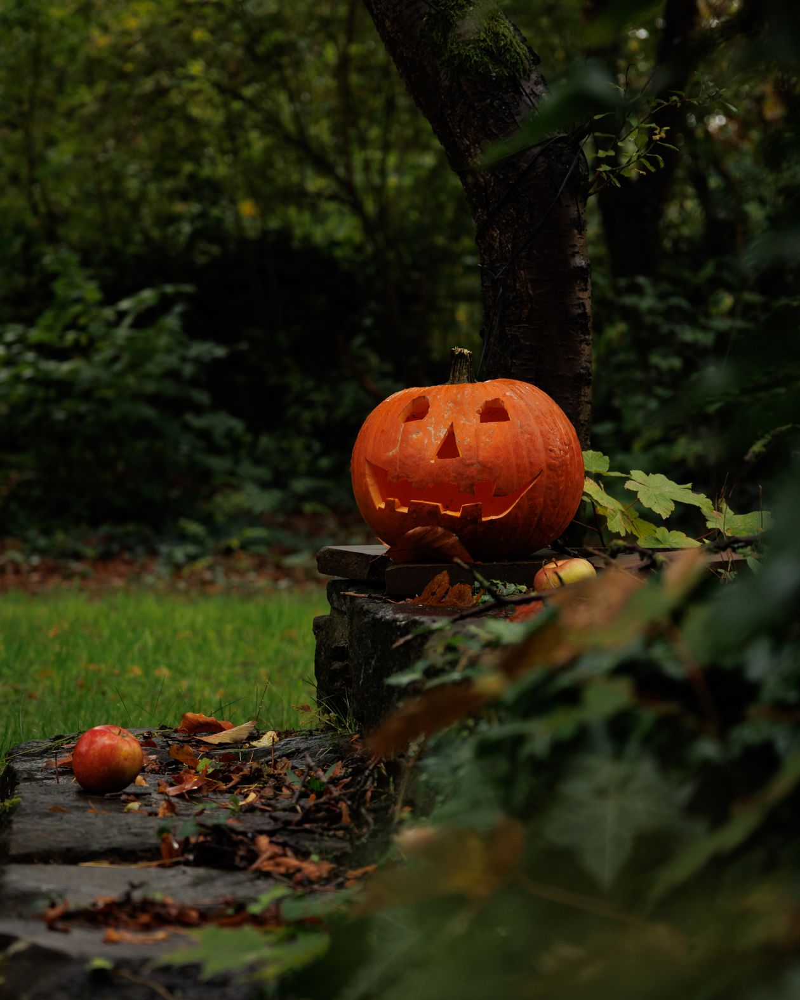

About the carver
SIGN PAINTER FIRST.
CARVER SINCE.
Before the pumpkins there were signs. The lettering on this site is set in the style of the fairground boards I used to paint — because that is where my hand learned to draw a face in one pass and mean it.
I am Eliza Crowe, of Sleepy Hollow, New York — a village that takes Halloween the way other places take harvest, which around here is saying something. For ten years I painted signs for Hudson Valley fairs and farms: gold leaf on black boards, lettering you could read from a moving hay wagon. In 2017 a fair director asked whether the woman who painted the pumpkin barn's sign would carve the pumpkin barn's pumpkins. I carved forty that October, badly and then less badly, and I have carved every October since — 386 pumpkins in 2025, out of a barn bench off Route 9.
The sign years are still in the work. I draw freehand because sign painters draw freehand. I think about how a face reads at thirty paces in bad light, because that is what a sign is for. And I keep a job book with every commission's weight, hours and lifespan written in it, because a sign painter quotes in writing or not at all.
The rest of the year I paint signs, grow a small patch of my own carving pumpkins, and repair the bench. October is the whole year, arranged into one month.
Raw material and a finished porch classic
Choosing happens at benches like this one, in September — by weight, by thump, by wall
The craft, plainly
Choosing, cutting, and what the light does
Choosing. A carving pumpkin is bought by wall, not by face. I want a fruit that feels heavy for its size, sounds hollow when I knock it, and has a stem like a handle — a green, woody stem means it was cut late and will keep. For shaded work I cut a small test window in the back and measure the wall: an inch and a half gives me five depths of light to draw with. Thin-walled pumpkins are not failures; they are pies, and I send them to the kitchen.
Cut through, or shade. These are the two honest techniques, and they are different trades sharing a bench:
- Cut-through removes pieces of wall entirely. The light is the candle or lamp itself, seen directly — bold, bright, unmistakable at a distance. It is also an open wound, and the pumpkin dries and curls at every edge. Four good days.
- Shading never breaks the inner skin. I shave the outer flesh to graded depths with ribbon tools and clay loops, and the light glows through the thinned wall — a cheek at half an inch, a highlight at a quarter. Portraits, logos and lettering live here. The wall stays whole, so the piece keeps longest: six good days.
- Relief treats the surface as a woodcut, taking whole regions down in layers. Beautiful, slow, and the most exposed to weather. Five good days, and it wants a roof.
Tools. A keyhole saw for lids, ribbon and loop tools borrowed from the clay studio for shading, a linoleum cutter for fine lines, and one good paring knife. Nothing with a motor has ever touched a Moonlit Patch pumpkin; the hand is slower and the pumpkin can tell.
| Design | At its best | Still presentable | After that |
|---|---|---|---|
| Cut-through face | 4 days | day 5–6, edges curling | compost |
| Shaded portrait | 6 days | day 7–8, softening | compost |
| Sculpted relief | 5 days | day 6, weather permitting | compost |
| Uncarved, for reference | 8–12 weeks | all winter, on a cold porch | soup, then compost |
The keeping routine that earns those numbers: a ten-minute cold soak with a splash of bleach (about a tablespoon to a gallon) to knock back mould, petroleum jelly worked into every cut surface to slow the drying, and nights somewhere cold — a fridge shelf, a barn, an unheated porch. Warmth is the enemy; a carved pumpkin on a heated hallway table loses a day a night.

Day three, in a client's garden
Standing straight, edges still sharp — this is what the keeping routine buys, and all it buys
The giant problem
Moving a hundred pounds of October
A giant pumpkin is a logistics job that ends in carving. A 100–150 lb fruit travels in a sling, never by its stem — the stem is a handle the pumpkin did not agree to. It moves on a pallet, by forklift or four strong neighbours, and it rests a day after moving before I open it, because a bruised wall shows in the glow a week later.
Once carved, a giant cannot be carried to the light — the light is brought to it, and it is carved where it will stand. That is why giants are booked by October 10 and why the planner charges handling per pumpkin: the forklift hire is a real invoice, and I put it in the reckoning where you can see it.
On foam “forever pumpkins”
Every September someone asks, kindly, why I do not carve the foam ones that last for ever. Because a foam pumpkin cannot rot, and a thing that cannot rot cannot glow properly — the light in a real pumpkin is alive in a way that has a cost, and the cost is five days. Porch furniture is a fine trade. It is a different trade. I carve the kind that dies, and I tell you the day it will happen, and I have never had a client call that honesty a problem.
If you take one home
Care, in four lines
- 1
Keep it cold at night
Fridge, barn, cold porch — anywhere under 50°F. Warm rooms are where carved pumpkins go to slump.
- 2
Keep the edges sealed
Petroleum jelly on every cut edge when it arrives, and again on day three. It slows the drying that curls a grin.
- 3
Revive with a soak
A face that has begun to shrivel gets an hour face-down in cold water. It will come back once. Only once — plan the photograph for that night.
- 4
Let it go
When it slumps, compost it. A pumpkin that fed a festival, lit a porch and ends in the garden has had a complete life. That was always the arrangement.